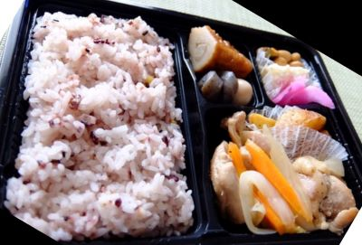
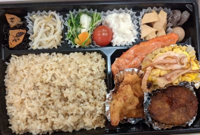
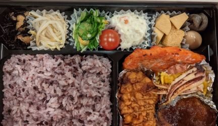

こだわりのお米
もみやま食堂のお米は籾山米穀店から厳選された、おいしいお米を使用しています。
白米
白米は時期に合わせてその時に一番おいしい玄米を毎日精米し、新鮮なお米を提供しています。


十五穀米
十五穀米はデトックス効果があり、老廃物を出してくれる効果があります。女性に人気のお米です。
玄米
玄米は拝み洗いをして研ぎ、圧力釜を使用して炊いているため、炊飯器で炊くよりもふっくらもちもちとしたお米を提供しています。また、食物繊維が豊富なため、腸内環境を整えてくれる効果が期待できます。


めがみ米
めがみ米は鉄分とマグネシウムを多量に含んでいるため、ミネラル豊富なお米となっております。また、薄紅色でモチモチとした食感とお米の皮がはじけるプチプチとした食感が楽しめます。
TOP